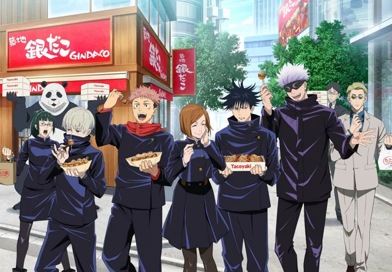

About Gojo
Gojo is known to be the strongest sorcerer in the series even among sorcerers at his level. He is capable of controlling huge amounts of cursed energy and is skilled at unleashing dangerously powerful techniques. Gojo is so strong that even jujutsu higher-ups feared his potential to overpower and overthrow them
Gojo and his Students
Characteristics
- Exceptional Jujutsu Sorcerer: Gojo is considered one of the most powerful Jujutsu Sorcerers in the series, known for his extraordinary combat skills and knowledge of cursed techniques.
- Incredible Cursed Energy: He possesses an immense amount of cursed energy, allowing him to perform devastating jujutsu techniques and manipulate his surroundings
- Limitless Cursed Technique: Gojo's innate technique, known as "Limitless," grants him the ability to control and manipulate space, making him nearly untouchable in battle.
- Confident and Cocky: Gojo is known for his confidence and cocky attitude, often taunting his opponents and displaying a nonchalant demeanor even in life-threatening situations.
Students of Gojo Satoru
Gojo Satoru's students, including Yuji Itadori, Megumi Fushiguro, Nobara Kugisaki, Maki Zenin, Toge Inumaki, and Panda, are a diverse and talented group of jujutsu sorcerers he mentors to combat curses and uphold the balance between the human world and the supernatural.